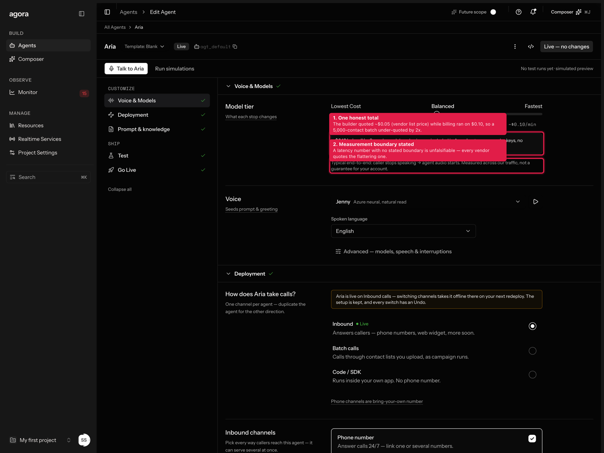
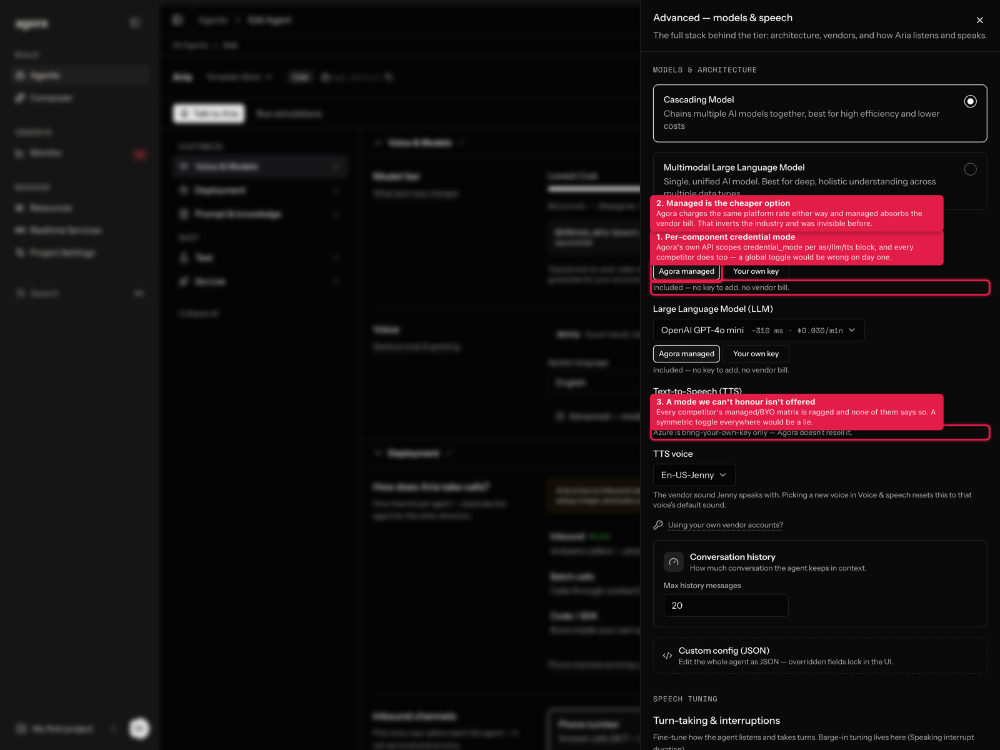
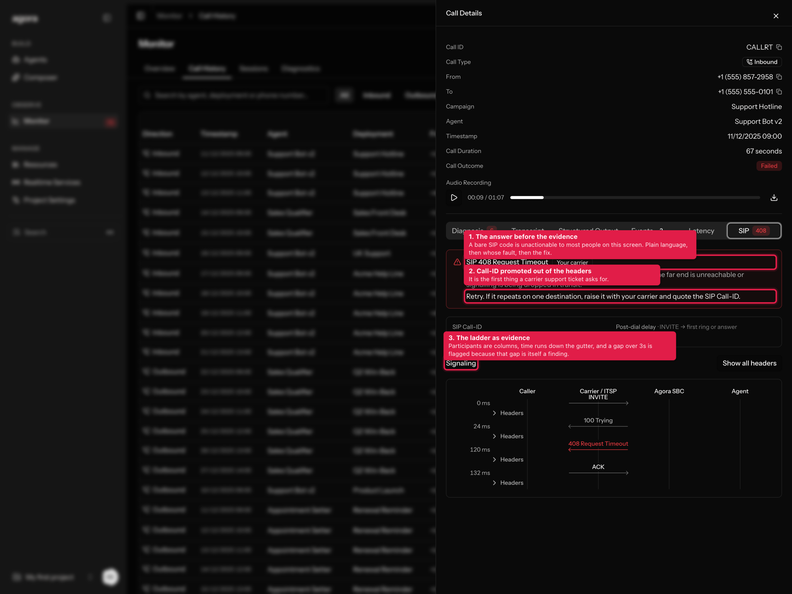
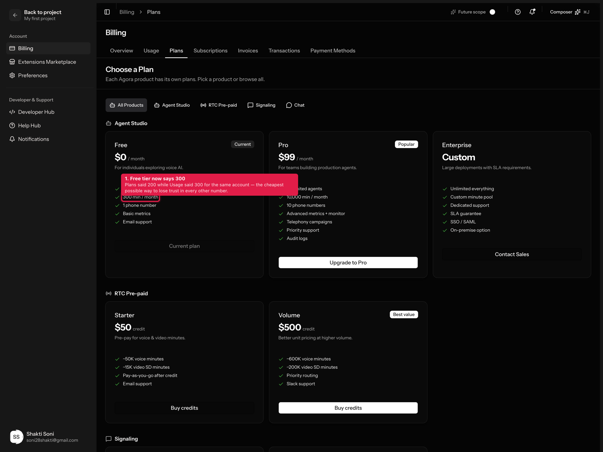
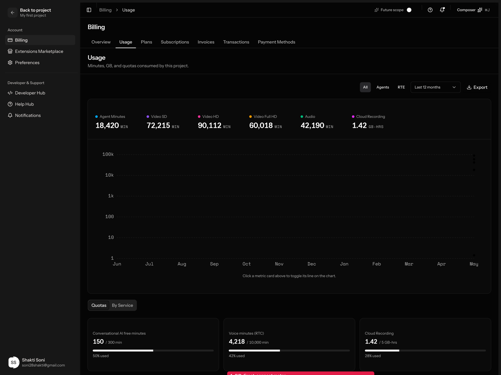

Five research streams ran first — four competitor scans and a three-persona focus group. They found something bigger than the planned features: Agora already ships managed mode at the API layer, it is cheaper than bringing your own keys, and the console says nothing about it. They also caught a two-times under-quote in the batch preflight that I introduced in Wave 1.
5research streams
3S1 defects fixed first
2×the preflight was under-quoting
2features research killed
1The pricing bug, and the fact that explains it
I introduced half of this in Wave 1. Making the estimate compute from real models was right; labelling the vendor subtotal as the total was not. The batch preflight quoted a 5,000-contact run at $500 when it would bill $1,000+ — inside the very screen built to prevent bill shock.
The builder was showing ~$0.05/min (the summed vendor list price) while billing ran on $0.10/min. Two authoritative-looking numbers, one product. One tester stopped believing every other figure on the page after spotting it — and then handed over the insight that resolved it: the gap isn't a bug, it's the feature you haven't built. $0.05 is what the vendors cost. $0.10 is Agora's rate. The delta is managed mode's price.
Verified against Agora's published Conversational AI pricing, and it is genuinely unusual:
Agora charges $0.10/min either way — the docs state you pay the same price even when you bring your own key.
Under managed, ASR/LLM/TTS usage is included in that rate.
So: managed = $0.10/min all in · your own keys = $0.10/min + your vendor bills (~$0.15 total).
Managed is the cheaper option. Every competitor prices the opposite way — Deepgram discounts BYO into a named cheaper SKU, Retell removes the line item entirely, OpenRouter charges a BYO fee. Agora is alone in subsidising the managed path, and it was invisible in the UI. Pricing now flows from one constant: AGORA_RATE_PER_MIN, which PAYG_RATE aliases rather than duplicating, since two hand-written copies of one rate is exactly how they drifted apart.

1One honest total. Under managed it reads as one number with the vendors named as included. Switch any slot to your own key and it becomes arithmetic — Agora's rate plus your vendor's, with the sum spelled out and an explicit note that switching back to managed costs less.
2The measurement boundary, stated, so the latency figure is falsifiable.
2Managed mode — per component, never global
Agora's own API scopes credential_modeinside each of the asr, llm and tts blocks independently, and every competitor scanned does the same. A global toggle would have been wrong on day one. It also matches how people actually work: the common real config is managed LLM plus your own cloned ElevenLabs voice.

1A mode control under each slot.2The economics lead the copy — "Included — no key to add, no vendor bill."
Note the TTS row: Azure is bring-your-own-key only, so it renders that fact instead of offering a mode Agora can't honour. Every scanned competitor has a ragged managed/BYO matrix and none of them says so; a symmetric toggle everywhere would be a lie.
Test itAria → Voice → Advanced — models, speech & interruptions.
Flip the LLM to Your own key and watch the cost line become an addition rather than a single number. Then look at the TTS row, which refuses the choice because Agora doesn't resell Azure.
3SIP — the answer before the evidence
Two P0s here: surface SIP error codes and CPS-limit failures, and add a signalling ladder. The personas split hard on how. The first-time builder wanted the code translated away entirely ("if you show me 503 I'll paste it into a ticket and go do something else"); the Agora veteran wanted it left raw, and gave the reason that settled it: a 503 from your carrier and a 503 from our own capacity ceiling need opposite remediations, and flattening both to "your carrier rejected some calls" sends you to debug the wrong company.
The resolution was to layer, not choose. Plain language and fault attribution on top; raw headers, verbatim, underneath.

1The answer first — what happened in plain language, a whose-fault badge, then what to do. The badge is the load-bearing part: config / carrier / callee / capacity are four different next actions.
2The SIP Call-ID is promoted out of the headers with a copy button, because it's the first thing a carrier ticket asks for.
3The ladder is the evidence underneath. Four participant columns (caller · carrier · Agora SBC · agent) — not two, because most failures live in the hop a two-column diagram erases. Time runs down the gutter, failures render in the destructive colour, and every message expands to verbatim headers.
Worth knowing where this sits competitively. Of seven voice-AI platforms scanned, five ship a PCAP download and tell you to open Wireshark. Only two render a ladder in-product, and neither offers click-through to raw headers or names whose fault it was. The nearest reference implementations are Homer and Wireshark themselves.
Test itMonitor → Call History → open any row with a Failed outcome → the SIP tab (it carries the response code as a badge).
Different calls produce different codes, so open a few: 486 and 480 blame the callee and tell you there's nothing to fix; 403 blames your config and links to the trunk; 503 explicitly says it means two different things and to check which. Expand Headers on any message.
4The smaller truths

1The free tier said 200 on Plans and 300 on Usage — same account, two tabs. 300 is correct and verified. A tester named this as his standard check for whether a company's billing and product teams talk to each other.

1A SIP direct-connection meter, deliberately adjacent to RTC concurrent channels. Without a real row, readers hunting for their SIP capacity misread the RTC line as it — a different product entirely.
Also fixed: the seeded Anthropic credential was warning that it would expire on a date two months in the past, which teaches people to ignore expiry warnings; and managed providers are now excluded from expiry checks altogether, since there is no key of yours to lapse.
5What research killed
New capacity SKUs dropped
The roadmap asked for capacity-based SKUs. The focus group's verdict was that we already shipped this and didn't notice: the concurrency card does prorated self-serve lines with included and purchased kept separate, queue-don't-drop at the wall, and line fees explicitly excluded from the spend cap. One tester rated it above Retell's equivalent. A second capacity product would fracture the one clean money story in the app — and a CPS upsell is worse, because on a bring-your-own-SIP platform the binding limit is usually the customer's own carrier, which Agora cannot sell more of. The answer is to attribute capacity limits, not sell them.
Provisioning-delay work already done
All three personas independently rated the existing first-run ceremony as finished — staged, named, honest elapsed counter, retry that re-runs only the failed stage, and a breakable wall. One called it the best-considered thing he saw. Closed, with two P2 nits noted below.
6What's next
The strongest finding of the whole round is a gap nobody in the category has filled:
No voice-AI platform correlates carrier signalling and pipeline stages on one time axis. The products with a SIP ladder have no pipeline spans; the products with pipeline traces have no SIP spans. "Why was this call slow or broken" lives in two views everywhere. Wave 1 built the pipeline waterfall and Wave 2 built the SIP ladder — merging them onto one axis is genuinely novel and we already own both halves.
Also carried forward, in the order the focus group recommended:
Schema before UI for SIP — the diagnosis engine has no place to put a carrier failure. CallSignals is entirely media- and model-plane, and FixTarget has no channel level, so a SIP rule can't be routed anywhere. Fix that before adding more SIP surfaces or it rots as a special case.
Attribute CPS — a dial-rate tile that doesn't say whether the ceiling is your carrier's or ours labels two opposite remediations identically.
A carrier-failed filter in Call History — the cheapest high-value item in the wave and the stated competitive parity bar.
Trunk health on the phone-number detail route, so the existing "Check the trunk" button stops dead-ending on a static channel list.
The live-switch boundary — "applies to calls started after 14:03; 40 in-flight calls finish on the current config." The config-version machinery already exists.
A project-level BYO-only policy, which is what converts a regulated customer from blocker to advocate.
A busy-hour sizing calculator for concurrency, and a recommendation drawn from observed peak — only two of eleven products help you size at all, and none uses your own telemetry.